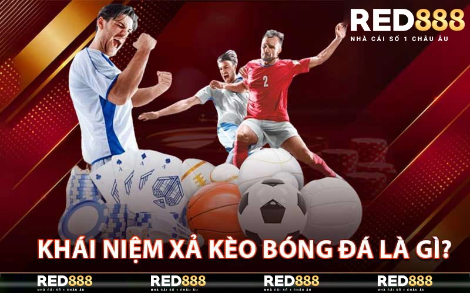
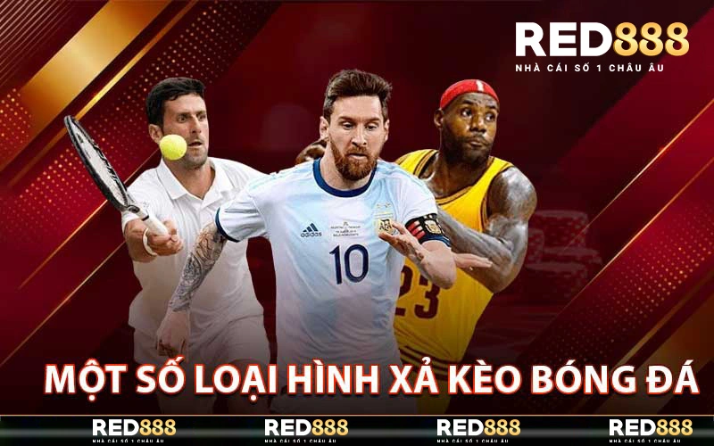
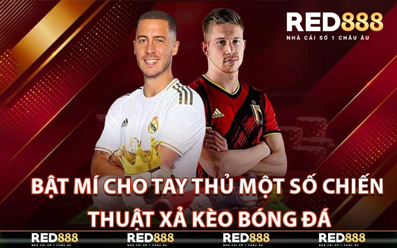

Xả Kèo Bóng Đá – Bật Mí Bí Quyết Chơi Cực Hiệu Quả
ĐÃ ĐĂNG TRÊN 22/05/2024 BỞI RED888.LIFE
Xả Kèo Bóng Đá là một trong những chiến thuật phổ biến và được nhiều người ưa chuộng trong thế giới cá cược bóng đá. Chiến thuật này có thể mang lại lợi nhuận đáng kể nếu bạn nắm vững các kỹ năng và bí quyết cần thiết. Trong bài viết này, chúng ta sẽ cùng nhà cái Red888 khám phá chi tiết các khía cạnh của Xả Kèo Bóng Đá, từ cách thực hiện cho đến việc nhận biết các lợi ích và rủi ro đằng sau.
Khái Niệm Xả Kèo Bóng Đá Là Gì?
Khái Niệm Xả Kèo Bóng Đá là gì?
Xả kèo bóng đá là một chiến thuật chơi bóng đá có nguồn gốc từ các cuộc cá độ trực tuyến. Đây là cách để người chơi có thể kiếm lợi nhuận từ việc đặt cược khi trận đấu đang diễn ra. Thông thường, người chơi sẽ đặt cược vào một đội bóng có tỉ lệ thắng cao hoặc có thể đặt cược vào cả hai đội để đảm bảo an toàn. Nếu tỉ lệ thắng của đội bóng được đặt cược cao hơn so với tỉ lệ mà nhà cái đưa ra, người chơi sẽ có lợi nhuận từ việc này.
Tuy nhiên, xả kèo bóng đá không phải là một chiến thuật chơi bóng đá đơn giản và dễ dàng. Để có thể áp dụng thành công, người chơi cần phải có kiến thức về bóng đá, theo dõi thông tin về các đội bóng và xem xét các yếu tố ảnh hưởng đến kết quả trận đấu như thay đổi đội hình, chấn thương, thiếu vắng cầu thủ chủ chốt, và nhiều yếu tố khác.
Một Số Loại Hình Xả Kèo Bóng Đá Mới Nhất
Một số loại hình Xả Kèo Bóng Đá Mới Nhất
Trong thế giới bóng đá, có rất nhiều loại hình xả kèo được áp dụng, tùy thuộc vào mục đích và chiến lược của người chơi. Dưới đây là một vài loại hình xả kèo phổ biến mà bạn có thể áp dụng trong các trận đấu.
Xả kèo theo tỷ lệ cược
Đây là loại hình xả kèo đơn giản nhất và được áp dụng rộng rãi nhất trong thế giới bóng đá. Khi xả kèo theo tỷ lệ cược, người chơi sẽ đặt cược vào một đội bóng có tỉ lệ thắng cao hơn so với đội bóng khác. Điều này có nghĩa là nếu đội bóng được đặt cược thắng, người chơi sẽ có lợi nhuận tương ứng với tỉ lệ cược. Tuy nhiên, nếu đội bóng thua, người chơi sẽ phải chịu mất tiền cược.
Xả kèo theo điểm số
Loại hình xả kèo này yêu cầu người chơi phải đưa ra dự đoán về tổng số điểm của trận đấu. Trong bóng đá, điểm số thường là một yếu tố quan trọng để xác định kết quả cuối cùng của trận đấu. Vì vậy, nếu bạn có kiến thức về các đội bóng và sức mạnh của họ, bạn có thể dễ dàng đưa ra dự đoán chính xác về tổng số điểm của trận đấu và đặt cược theo đó.
Xả kèo theo thời gian
Cách chơi xả kèo này yêu cầu người chơi phải đưa ra dự đoán về kết quả của trận đấu trong một khoảng thời gian cụ thể. Ví dụ, nếu bạn đặt cược vào đội bóng A sẽ dẫn trước đội bóng B trong hiệp 1, nhưng đội bóng B sẽ lội ngược lại và giành chiến thắng cuối cùng, nếu kết quả này xảy ra, bạn sẽ có lợi nhuận từ việc đặt cược này.
Bật Mí Cho Tay Thủ Một Số Chiến Thuật Xả Kèo Bóng Đá
Bật Mí Cho Tay Thủ Một Số Chiến Thuật Xả Kèo Bóng Đá
Để có thể chơi xả kèo bóng đá hiệu quả, người chơi cần phải có kiến thức về bóng đá và các chiến thuật cũng như cách áp dụng chúng trong từng trường hợp cụ thể. Dưới đây là một số chiến thuật được các tay thủ chuyên nghiệp sử dụng để chơi.
Chọn điểm vào của đội bóng
Chiến thuật này yêu cầu người chơi phải tiếp cận trận đấu theo hai góc độ khác nhau, đó là góc độ của đội bóng và góc độ của nhà cái. Nếu như bạn là một người hâm mộ của một đội bóng cụ thể, bạn sẽ có kiến thức sâu sắc về đội bóng và các cầu thủ của họ.
Áp dụng chiến thuật “underdog”
Chiến thuật “underdog” là một trong những cách chơi xả kèo bóng đá được áp dụng rất phổ biến hiện nay. Theo đó, người chơi sẽ đặt cược vào một đội bóng có tỉ lệ thắng thấp hoặc là “dưới” nhà cái đưa ra.
Đây là một chiến thuật rủi ro và yêu cầu người chơi có kiến thức sâu về bóng đá để có thể áp dụng thành công. Tuy nhiên, nếu đúng đòn bẩy và đưa ra dự đoán chính xác, bạn có thể có lợi nhuận lớn từ việc đặt cược này.
Theo dõi các yếu tố bên ngoài
Như đã đề cập ở trên, để có thể chơi xả kèo bóng đá hiệu quả, người chơi cần phải theo dõi thông tin về các yếu tố bên ngoài ảnh hưởng đến kết quả trận đấu. Điều này đòi hỏi người chơi phải luôn cập nhật tin tức và sự kiện liên quan đến các đội bóng.
Những Sai Lầm Cần Tránh Khi Xả Kèo Bóng Đá
Ngoài những chiến thuật chơi xả kèo bóng đá, người chơi cũng cần phải tránh những sai lầm thông thường mà nhiều người thường mắc phải khi tham gia vào hoạt động này. Dưới đây là những sai lầm cần tránh để có thể chơi xả kèo bóng đá hiệu quả.
Tham gia vào các trò lừa đảo
Một trong những sai lầm lớn nhất khi chơi xả kèo bóng đá là tham gia vào các trò lừa đảo. Hiện nay, có rất nhiều trang web cá độ uy tín và cung cấp thông tin chính xác về bóng đá, tuy nhiên cũng có không ít trang web lừa đảo chỉ nhằm mục đích lấy tiền của người chơi.
Đặt cược mù quáng
Việc đặt cược mù quáng là một sai lầm thường gặp khi chơi xả kèo bóng đá. Trong cuộc sống, không có chiến thuật hay cách chơi nào mang lại thành công khi bạn cứ làm mù quáng mà không có phương án và tính toán cẩn thận. Điều này cũng áp dụng cho việc chơi. Nếu bạn đặt cược mà không có kiến thức hoặc tính toán kỹ lưỡng, bạn sẽ rất dễ mắc phải những sai lầm và mất tiền.
Kết Luận
Trong thế giới bóng đá, xả kèo bóng đá là một chiến thuật chơi bóng đá được áp dụng rộng rãi. Tuy nhiên, để có thể chơi hiệu quả, người chơi cần phải có kiến thức sâu về bóng đá và tìm hiểu kỹ về các chiến thuật và cách thức hoạt động của nhà cái. Nếu không, người chơi sẽ rất dễ mắc phải những sai lầm và mất tiền.
BÀI VIẾT MỚI